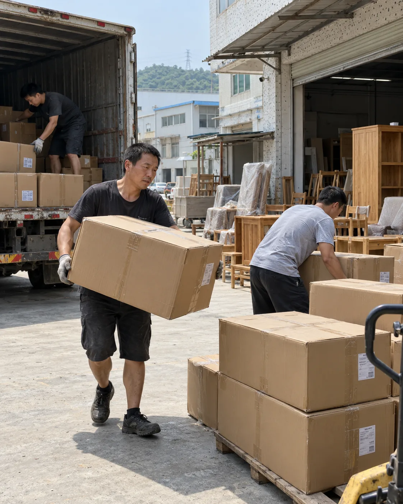

01
Supplier readiness
Locations, timing and cargo condition are brought into the plan early.
Good freight support is useful before anything moves. We focus on the questions that help you compare options, prepare cargo and approve the scope with more confidence.

More confidence comes from knowing what is included, what is assumed and what happens next.
Veyra organises the shipment conversation around decisions a business actually needs to make.

Locations, timing and cargo condition are brought into the plan early.
Urgency, size and handling needs help frame the air-or-sea conversation.
Included services and conditional items are easier to compare.
Address, access and handover details are considered before final delivery.
We explain the information that shapes a shipment and keep the next action visible. The website prepares the conversation; the team confirms the actual quotation and movement.
No broad superlatives or instant-price promises. Each page helps answer a specific cargo question.
Start with the cargo, supplier locations, destination and timing.
Compare service suitability using the complete shipment details.
See what to prepare and how the quotation conversation progresses.